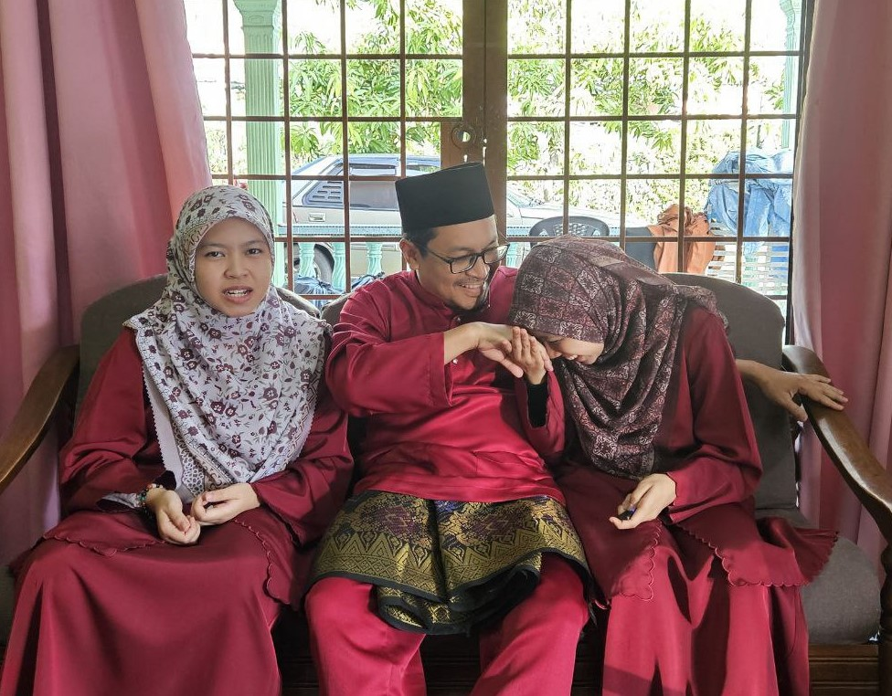
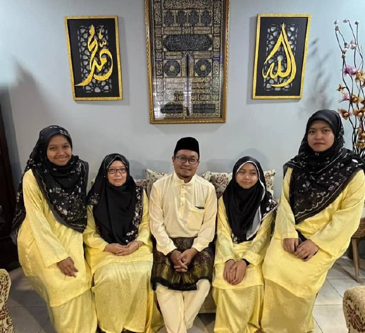
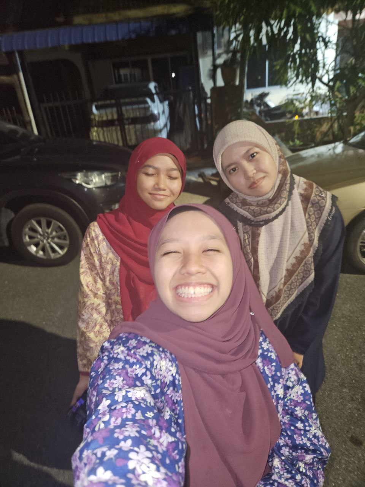

|  |  |  |
A little bit about myself, my name is Nur I'zzah Raihanah Bt Mohd Amin, this year I turned 20 years old. and I live in Shah Alam, Selangor and
I am currently far away in Kedah to pursue my Diploma studies in Library Informatics at Universiti Teknologi Mara. Apart from that, living far
from home has taught me to be more independent and responsible. In the future, I hope to work in professional environments such as libraries,
archives, or information centers, where I can contribute my skills and continue to grow.
Moreover, I am the eldest of three siblings. As the eldest, people assume me to be a good role model for my sisters, but I am still a human being who is trying to figure out the direction of my life. Furthermore, sometimes it's normal to have or arguments with siblings, but I believe those moments actually strengthen our bond. But as we all grown older, we are started to feel more like friends rather than siblings who always argue. We rarely fight now unless they borrow my things like blouses or scarves without asking first. Sometimes, it’s funny when I think back on those moments. Lastly, even though I’m far from my parents, their support means everything to me. I’ve also found comfort in the friendships I’ve built here, which bring joy to my everyday life and it's feel at home despite the distance. Although sometimes we make phone calls, it's not the same as seing each other in person. To conclude, I am grateful for my family and love them dearly. I hope to repay their kindness as best as I can in the future. |
©Copyrights 2025